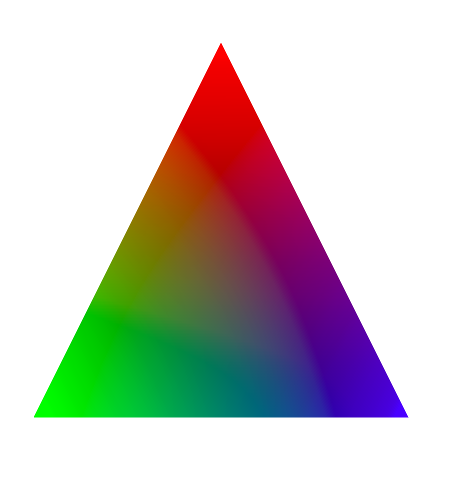

着色器的种类
简单的说就是二类，顶点着色器和片元着色器，前者用于控制每个点的独有信息，后者用于控制所有点的共有信息。
可能这样说不是很准确，或者说严谨，不过记住上面的描述，我们稍后给出一个例子，会比较容易的帮助你理解他们。
一个简单的例子
在继续说明前，我们来演示一个例子（运行结果如右图，你也可以查看 例子代码 ）：
我们借助缓冲区（这里你可以先无视，只要知道它帮忙干什么就可以了，后续会对缓冲区进行说明的）写入了3个点的信息，一个点包含6个数据，分别表示点的坐标（x, y, z）和该点颜色（r, g, b）。
我们把点的数据传递给顶点着色器里面的变量 gl_Position ，而颜色按理说应该传递给片元着色器的变量 gl_FragColor ，可惜的是，事情没有那么简单。
事实上，我们是通过varying类型的变量 v_color 来帮助我们从顶点着色器的变量 a_color 传递给 片元着色器的变量 gl_FragColor 。可能细心的你已经发现了，这也不是简单的传递。
逐片元
例子运行的结果我们应该看出来，根据三个点绘制一个三角形，三个点颜色分别是红绿蓝，而绘制出来以后，是一个渐变。
简单的理解，就是顶点着色器用于设置每个点的信息（每个点的独有信息），比如点的坐标和颜色，而片元着色器用于根据点的信息来最终确定具体位置的色彩（不一定是颜色，后面还有纹理等）。
比如这里，我们绘制的是三角形，而传递的信息只有三个点，别的点就需要计算了，也就是 逐片元 的过程，因此片元着色器不是和点一一对应的，也就没办法直接传递数据给它了，只有把每个点的位置和颜色对应的告诉它，它经过计算获得具体点的色彩。
总结
二个着色器的具体用法在 快速开始中应该就已经理解了，这里想说明的是它们二个的区别（你想，为什么着色器是二个，而不是一个或三个）。
着色器是3D绘图中最最重要的部分，比别的任何部分都重要，理解二个着色器的分工很重要。
我个人的简单理解就是：顶点着色器记录每个点的信息，片元着色器根据这些信息计算出绘制的时候每个点真实的色彩！